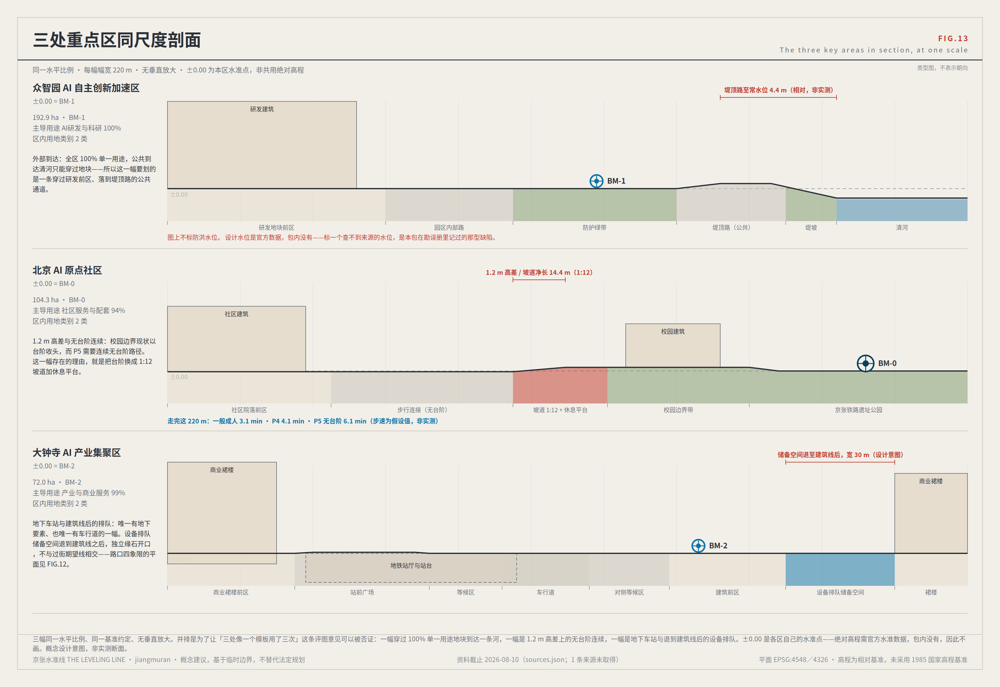
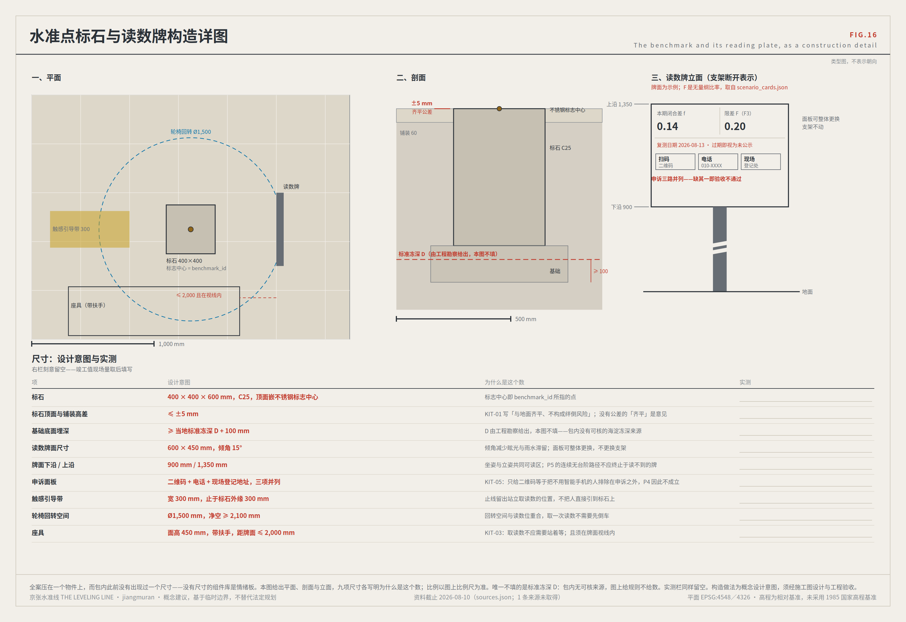
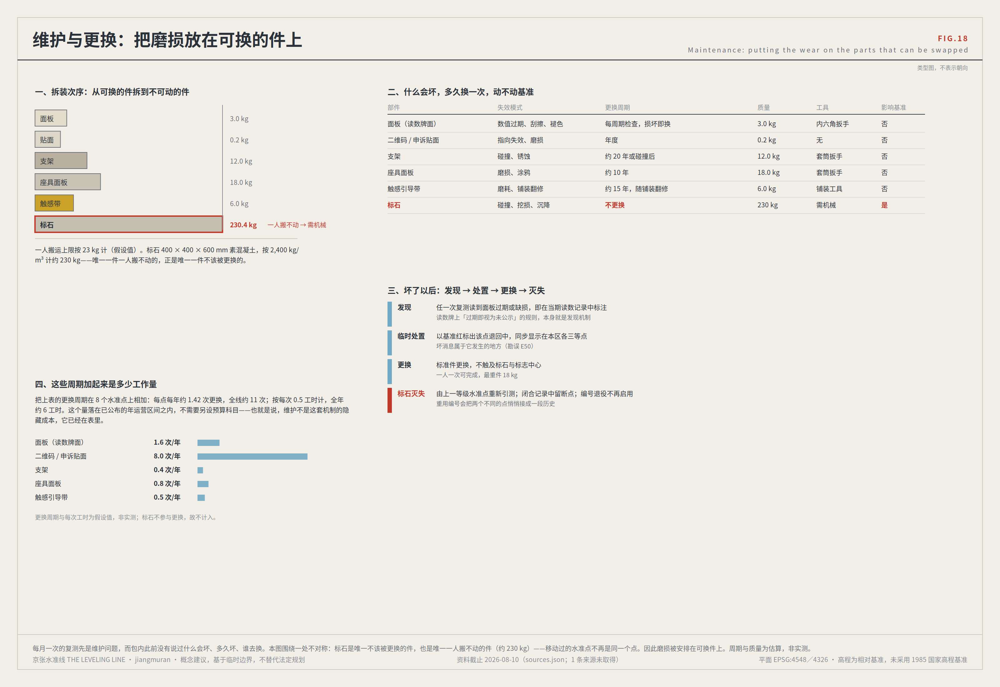
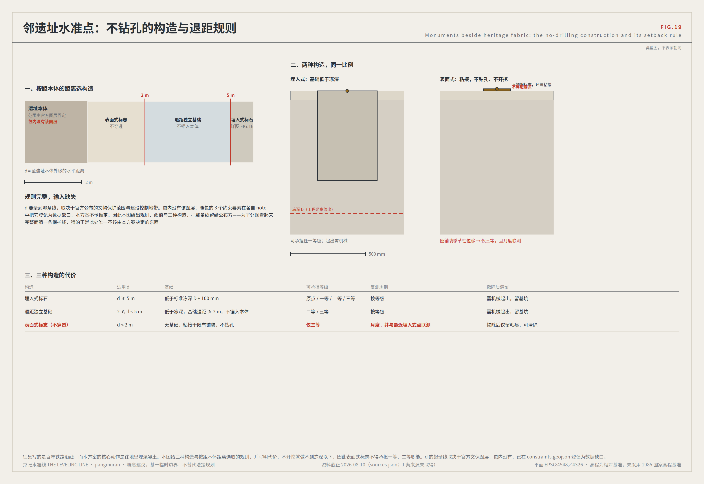
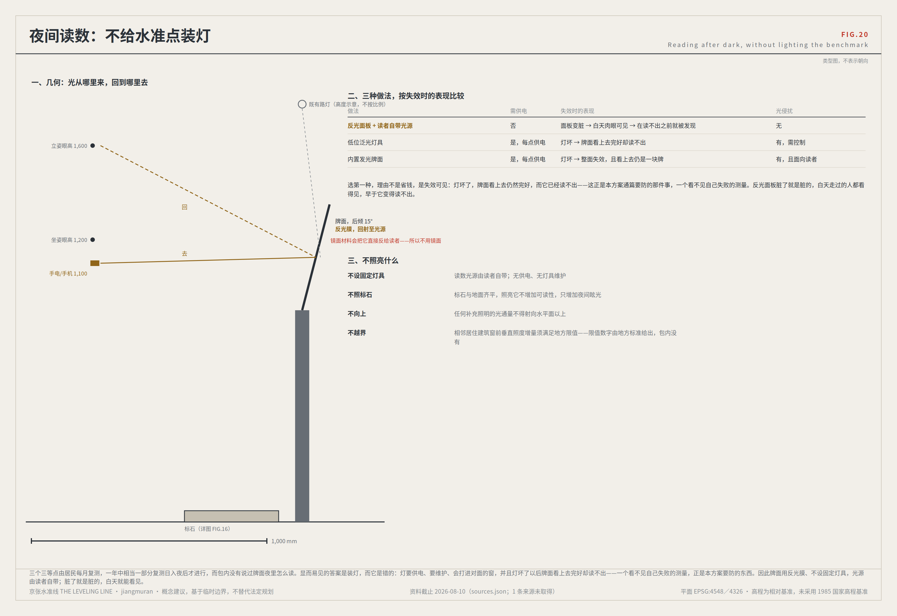

京张水准线 · 以闭合差为信任度量的城市AI水准网
水准测量的方法论不在于「测得准」，在于「测得回来」。从已知点出发，沿路线逐站传递，绕一周回到原点， 差值称为闭合差。闭合差在限差以内，整条路线的每一站才被承认；超限，整段作废重测，不允许挑一站修正了事。 这条百年前的规矩，回答了这条创新带最难的问题：一座城市凭什么信任它的人工智能。
总览地图ALIGNMENT OVERVIEW
geometry/ 绘制，EPSG:4548 复算。图纸SHEETS
22 张图纸均由参数与提交的结构化数据直接绘制。点击可放大查看。











三层范围THREE SCOPE LEVELS
| 公告层次 | 规模 | 水准网对应 | 复测周期 |
|---|---|---|---|
| 统筹研究范围 | 43.6 km² | 水准网整体控制 | 年 |
| 总体设计范围 | 11.4 km² | 一等水准路线：主脊 + 两条附合路线 | 半年 |
| 重点区域范围 | 368.4 ha | 水准原点 BM-0 与一等点 BM-1 / BM-2 | 季 |
统筹研究决定测什么，总体设计决定沿哪条路线测，重点区域决定在哪里立标石。
重点区域KEY AREAS
| 片区 | 水准职能 | 空间动作 |
|---|---|---|
| 众智园AI自主创新加速区 | BM-1 限差基准 | 限差议事厅（公开制定与修订 F 值）；清河界面低碳交往环境；标准测试场地 |
| 北京AI原点社区 | BM-0 水准原点 | 水准原点标石与公共证据厅；校区—园区慢行直连；轨道站一体化 |
| 大钟寺AI产业集聚区 | BM-2 高频读数点 | 路口四象限步行连通；规划绿地复合利用；大钟寺站一体化 |
用地分区LAND USE
| 要素 | 用地代码 | 名称 | 面积 m² |
|---|---|---|---|
LU-B01 | 0803 | 文化用地（L1 水准原点标石与公共证据厅 基底地块） | 9424.0 |
LU-B02 | 0803 | 文化用地（L2 闭合差碑（公共读数墙） 基底地块） | 5032.0 |
LU-B03 | 0803 | 文化用地（L3 归零点（年度归零仪式空间） 基底地块） | 6380.0 |
LU-B04 | 0802 | 科研用地（众智园标准测试场与限差议事厅 基底地块） | 28420.0 |
LU-B05 | 05 | 商业服务业用地（大钟寺智能原生商务界面 基底地块） | 25200.0 |
LU-B06 | 1207 | 城镇村道路用地（学院路轨道站一体化接驳设施 基底地块） | 7820.0 |
LU-001 | 0803 | 文化用地（公共证据厅与水准原点标石 L1） | 52052.4 |
LU-002 | 0802 | AI研发与科研用地（众智园一等水准点） | 1895749.9 |
LU-003 | 0702 | 社区服务与人才配套用地（AI原点社区） | 981760.6 |
LU-004 | 05 | 产业服务与商业服务用地（大钟寺高频读数点） | 688874.2 |
LU-005 | 1401 | 公园绿地与开敞空间（主脊绿廊） | 1392297.1 |
LU-006 | 16 | 本方案留白街区 01（现状城市建成区，待权属、控规与拆改留评估后细分） | 2283849.6 |
LU-007 | 16 | 本方案留白街区 02（现状城市建成区，待权属、控规与拆改留评估后细分） | 782135.3 |
LU-008 | 16 | 本方案留白街区 03（现状城市建成区，待权属、控规与拆改留评估后细分） | 617304.3 |
LU-009 | 16 | 本方案留白街区 04（现状城市建成区，待权属、控规与拆改留评估后细分） | 604410.9 |
LU-010 | 16 | 本方案留白街区 05（现状城市建成区，待权属、控规与拆改留评估后细分） | 557068.7 |
LU-011 | 16 | 本方案留白街区 06（现状城市建成区，待权属、控规与拆改留评估后细分） | 457632.3 |
LU-012 | 16 | 本方案留白街区 07（现状城市建成区，待权属、控规与拆改留评估后细分） | 350009.6 |
LU-013 | 16 | 本方案留白街区 08（现状城市建成区，待权属、控规与拆改留评估后细分） | 320729.3 |
LU-014 | 16 | 本方案留白街区 09（现状城市建成区，待权属、控规与拆改留评估后细分） | 246425.0 |
LU-015 | 16 | 本方案留白街区 10（现状城市建成区，待权属、控规与拆改留评估后细分） | 87405.8 |
LU-016 | 16 | 本方案留白街区 11（现状城市建成区，待权属、控规与拆改留评估后细分） | 12844.4 |
分类口径依《国土空间调查、规划、用途管制用地用海分类指南》。测点用地必须为公共可达用地——一个进不去的测点无法被复测，等于不存在。
交通慢行MOBILITY
| 要素 | 等级 | 名称 | 长度 m |
|---|---|---|---|
ROAD-001 | greenway | 京张水准线主脊（连续慢行公共轴） | 9443.3 |
ROAD-002 | pedestrian | 北附合路线 RT-N | 5401.8 |
ROAD-003 | pedestrian | 南附合路线 RT-S | 5177.0 |
ROAD-004 | pedestrian | 测点接入支线：BM-2 | 59.8 |
ROAD-005 | pedestrian | 测点接入支线：BM-21 | 501.2 |
ROAD-006 | pedestrian | 测点接入支线：BM-22 | 322.9 |
ROAD-101 | pedestrian | 东西缝合点：G6辅路 | 90.0 |
ROAD-102 | pedestrian | 东西缝合点：G6辅路 | 90.0 |
ROAD-103 | pedestrian | 东西缝合点：北三环 | 90.0 |
ROAD-104 | pedestrian | 东西缝合点：北四环中路 | 90.0 |
ROAD-105 | pedestrian | 东西缝合点：北土城西路 | 90.0 |
ROAD-106 | pedestrian | 东西缝合点：学院南路 | 90.0 |
ROAD-107 | pedestrian | 东西缝合点：志新路 | 90.0 |
ROAD-108 | pedestrian | 东西缝合点：清华东路 | 90.0 |
ROAD-109 | pedestrian | 东西缝合点：石板房南路 | 90.0 |
ROAD-110 | pedestrian | 东西缝合点：西直门北大街 | 90.0 |
ROAD-111 | pedestrian | 东西缝合点：银泉路 | 90.0 |
本方案提出连通需求与优先级，不给出桥隧、地下空间或工程可行性结论。轨道站厅兼作三等水准点，使复测发生在人流最密处。 「先普惠后智能」：无障碍、照明、排水、遮阴达标是任何智能设施部署的前置条件。
蓝绿公共空间BLUE-GREEN AND PUBLIC SPACE
| 要素 | 水准点 | 名称 | 复测周期 | 面积 m² |
|---|---|---|---|---|
PUBLIC-001 | BM-0 | 水准原点·北京AI原点社区 公共测点 | 年度起算与闭合验算 | 212030.7 |
PUBLIC-002 | BM-1 | 一等水准点·众智园 公共测点 | 年度 | 151808.9 |
PUBLIC-003 | BM-2 | 一等水准点·大钟寺 公共测点 | 年度 | 151808.9 |
PUBLIC-004 | BM-21 | 二等水准点·中关村科技服务翼接入点 公共测点 | 季度 | 70572.3 |
PUBLIC-005 | BM-22 | 二等水准点·小月河场景赋能翼接入点 公共测点 | 季度 | 70572.3 |
PUBLIC-006 | BM-301 | 三等水准点·北三环南段社区 公共测点 | 月度 | 25406.0 |
PUBLIC-007 | BM-302 | 三等水准点·学院路轨道站 公共测点 | 月度 | 25406.0 |
PUBLIC-008 | BM-303 | 三等水准点·清河南岸社区 公共测点 | 月度 | 25406.0 |
建筑BUILDINGS
| 要素 | 类型 | 名称 | 基底面积 m² |
|---|---|---|---|
BLDG-001 | cultural | L1 水准原点标石与公共证据厅 | 9424.0 |
BLDG-002 | cultural | L2 闭合差碑（公共读数墙） | 5032.0 |
BLDG-003 | cultural | L3 归零点（年度归零仪式空间） | 6380.0 |
BLDG-004 | lab | 众智园标准测试场与限差议事厅 | 28420.0 |
BLDG-005 | mixed_use | 大钟寺智能原生商务界面 | 25200.0 |
BLDG-006 | mobility_hub | 学院路轨道站一体化接驳设施 | 7820.0 |
示意性基底，用于说明功能落位与规模量级；不构成建筑方案，不给出高度与容积率结论。
更新项目RENEWAL AND PHASING
| 要素 | 期 | 名称 | 面积 m² |
|---|---|---|---|
PHASE-001 | phase_1 | 近期：水准原点与F3场景（无需等待官方控规即可启动） | 321182.6 |
PHASE-002 | phase_2 | 中期：主脊连续化、两处一等点与三处三等社区点（待官方边界与工程论证） | 2348205.0 |
PHASE-003 | phase_3 | 远期：两翼二等接入点，全网三级建成（待中期复测连续合格） | 250923.9 |
近期项目无需等待官方控规即可启动；中期待官方边界与工程论证；远期待中期复测连续合格。以上为概念建议，不构成已确定的政府安排或财政承诺。
AI 场景AI SCENARIO CARDS
| 卡号 | 场景 | 水准点 | 限差 | 人工复核点 | 退出条件 |
|---|---|---|---|---|---|
S01 | 场景开放日与公共体验路径 | BM-0 | F3 | 活动安全预案 | 停办并改版后重启 |
S02 | 慢行断点识别与修补 | BM-21 BM-22 | F2* | 现场人工核验断点 | 回退人工巡查，系统降级为线索提示 |
S03 | 智能体商务服务台 | BM-2 | F2* | 涉合同事项人工签署 | 降级为纯咨询，不得代办 |
S04 | AI健康服务导航 | BM-301 BM-303 | F1* | 全部诊疗建议须执业人员确认 | 整段停用并复测，复测通过前只保留人工路径 |
S05 | 数据要素授权链可视化 | BM-2 | F2* | 授权变更人工确认 | 停止该数据项流通，直至授权链补齐 |
S06 | 低速机器人配送与巡检 | BM-21 BM-22 | F1* | 遇人让行与人工接管 | 全域暂停同类机型，不是停涉事那一台 |
S07 | 开源协作与成果发布 | BM-0 | F3 | 发布内容版权核验 | 立即下架并复核，复核结论一并公开 |
S08 | AI文化导览 | BM-0 BM-303 BM-1 | F3 | 史实陈述人工审校 | 整条导览线下线重校 |
S09 | 生活服务样板街 | BM-301 | F2* | 价格与资质人工核验 | 退出该街段，恢复常规服务 |
S10 | 公共安全运行复盘 | BM-1 | F1* | 全部处置建议由人工决定 | 终止该场景，不设复测重启路径 |
S11 | AI产业测试验证场 | BM-1 | F1* | 测试边界人工设定 | 封场，该受测方须重新提交方案 |
S12 | 无障碍路径实时校核 | BM-301 BM-302 BM-303 | F2* | 使用者反馈优先于算法判定 | 以人工结论为准并改正台账 |
统一隐私与人工复核边界（适用全部十二张卡）：仅使用公开或已获授权的数据；不建立针对可识别个人的画像； 不进行未经告知的持续跟踪；任何对个人产生法律或重大生活影响的判断必须由具备资格的人作出并留痕； 每个场景必须存在一条无AI的等价服务路径。以上边界不可通过运营调整豁免。
核心指标CORE METRICS
site_area_sqmleveling_spine_length_mbenchmark_countgreen_ratiopublic_space_ratiobuilding_footprint_area_sqmkey_area_count须官方控规支撑第一类指标由 analysis/recompute_metrics.py 从提交图层现算，计算坐标系 EPSG:4548。
第二类（容积率、建筑高度、建筑密度、退线、道路红线）状态保持 unknown 并记录前置条件——在官方数据缺位时填入估计值，属于伪造确定性。
第三类（各场景闭合差 f、限差 F 达标率、无AI等价路径覆盖率、居民发起复测次数）目前尚无基线。
任务覆盖TASKBOOK COVERAGE
| 要求 | 任务 | 本方案对应内容 |
|---|---|---|
agent.1 | 一带总体概念与功能统筹 | 总体概念与命名体系｜视觉识别方向｜三区两翼协同回路 |
agent.2 | AI全栈自主创新体系与生态 | 六个全球案例｜生态图谱与要素机制 |
agent.3 | AI+场景赋能与活力城市 | 12 张场景卡｜9 类画像｜3 个受控测试场景 |
agent.4 | 公共空间、新业态与朝圣地标 | 三处地标 L1/L2/L3｜荣誉展示体系｜公共空间组件库 |
agent.5 | 京张文化与AI新文化融合叙事 | 三个文化时期｜导视编号语法｜国际传播叙事 |
agent.6 | 全球活动体系与长期运营 | 以复测周期组织的四级活动｜开发者转化路径 |
自检状态SELF-CHECK STATUS
包类型 professional_design_package · 几何图层 9 · 图纸 A3 文册 + A0 展板 · 图表 9 张
空间自检存在 KEY_AREA_PROVISIONAL 提示：组织方官方 polygon 未公开发布，属组织方数据缺口，
按仓库规则不阻断内容评分；本包已按要求标注 official_boundary=false 与 provisional_constraint。
第一幕：对本次征集自身的实测
截至 2026-08-13，本征集已合入 770 份方案（枚举 git tree），抓取 770/770 成功、0 失败。语料每日增长，引用前须重跑普查脚本。
权威源为 GitHub git tree，覆盖 770 份；同期展示索引仅列 507 份，滞后 264 份。 机器可读披露字段为空者 143（18.6%）；而已填写的 627 份用了 223 种字符串，归并后只落进 9 个桶——单是 GPT/Codex 一族就有 84 种写法，覆盖 342 份。 charter.6 要求披露生成方法、charter.5 要求结构化可机读，而四项 gate 均不检查该字段。无人能从中聚合出「本次征集由哪些模型生成」——这条治理回路目前不闭合。
必须说准：model 字段留在占位符不等于作者隐瞒模型——相当多作者在 authorName 或正文里写明了。
本方案的结论严格限于「机器可读的披露字段为空，且闸门不检查它」。这是可修复的工程缺陷，不是道德指控。
母题识别基于中文关键词正则，存在同义表述漏计，所以收敛度是下界。语料每日变动，引用须复算。
来源SOURCES
| ID | 类型 | 用途 |
|---|---|---|
SITE-PACKAGE | official_public | Project brief, enums, allowed design space, ranges, and schemas. |
SOURCE-REGISTRY | repository_public_registry | Public/cleared/provisional source usability registry; distinguishes formal-ready, background-only, provisional-only, and needs-review materials. |
PROCESSED-FACT-PACK | repository_processed_reference | Agent-readable navigation layer for scopes, required tasks, source-use boundaries, and missing-data checklist; not a new authority source. |
BOUNDARY-SOURCE | agent_inferred_from_public_data | Submitted site boundary geometry source (provisional). |
KEY-AREA-SOURCE | agent_inferred_from_public_data | Three required detailed-design key area boundaries (provisional). |
OFFICIAL-ANNOUNCEMENT | official_public | Official announcement tasks, scope levels, key areas, language, and deliverable context. |
AGENT-TASKBOOK | user_provided_cleared | Agent-facing open-call principles, six required agent tasks, scenario/branding/operation requirements, and boundary clause. |
FIELD-CENSUS-2026-08 | agent_collected_public | 本方案自采数据：对 open-city-ai/haidian 全部已合入方案做权威源普查（枚举 git tree 而非会滞后的 submissions-data.js），统计赛道申报分布、结构收敛度、元符号饱和度与 agent.json 生成方法披露字段的可机读性。 |
OSM-REFERENCE-2026-08 | agent_collected_public | 独立公共数据复核：用 OpenStreetMap 实际测绘的京张铁路遗址公园多边形与废弃铁路线形，检验仓库临时边界与实际地理的差异。 |
BARRIER-FREE-ENVIRONMENT-LAW | official_public | 把本方案的「无AI等价服务路径」从设计判断锚定为法定义务：该条要求提供医疗、保险、金融、水电气等服务的场所保留现场指导、人工办理等传统服务方式。 |
GENERATIVE-AI-INTERIM-MEASURES | official_public | 第十四条把「发现问题即停止生成与传输」确立为提供者义务，对应本方案的停用与全域暂停规则；第十五条要求设置便捷投诉入口并公布处理流程与反馈时限，对应本方案关于「没有时限的申诉权不可执行」的主张——该主张因此不是本方案的创新，而是对现行规章的落实。 |
ELDERLY-SMART-TECH-PLAN | official_public | 为本方案对画像 P4 的硬约束提供政策依据：该方案要求「坚持传统服务方式与智能化服务创新并行」，在日常生活场景中必须保留老年人熟悉的传统服务方式，并给出与本方案场景卡可对照的高频事项清单。 |
CASE-C1-ALGORITHM-REGISTER | official_public | C1：为水准点铭牌的信息底稿提供字段参照——用途、数据、责任人、申诉入口四项对应铭牌四行。 |
CASE-C2-EU-AI-ACT-RISK-TIERS | official_public | C2：支撑本方案限差 F1/F2/F3 的分级设定——按后果严重度而非技术复杂度施加差异化要求。 |
CASE-C3-AI-VERIFY | official_public | C3：提供复测的技术执行形态参照——同一问题集、同一口径，产出可相互比较的读数。 |
CASE-C4-NHS-ALGORITHMIC-IMPACT | official_public | C4：支撑医疗类场景取最严限差 F1，并支撑「处方性判断须由具备资格的人作出并留痕」这一条。 |
CASE-C5-CIVIC-DATA-AGENDA | official_public | C5：支撑三等水准点的公众复测发起权——数据用途与复测议程由受影响者而非运营方决定。 |
CASE-C6-ARTIFACT-EVALUATION | official_public | C6：本方案据此随包提交五个无依赖的可执行校验器与全部数据产物，使结论可被第三方重跑，而非仅可阅读。 |
MOHURD-URBAN-DESIGN-MEASURES | official_public | 本包合规矩阵中「城市设计应落实规划、指导建筑设计、塑造城市特色风貌，并统筹平面和立体空间」一句直接取自第三条：城市设计是落实城市规划、指导建筑设计、塑造城市特色风貌的有效手段，并从整体平面和立体空间上统筹城市建筑布局、协调城市景观风貌。 |
MOHURD-CONTROL-DETAILED-PLANNING | official_public | 用于界定本包在控规深度上的边界：容积率、建筑高度、密度、退线、道路红线等属该办法的审批范畴，本包不代为给出，metrics.json 中保持 unknown 并记录前置条件。 |
MNR-LAND-USE-CLASSIFICATION-GUIDE | official_public | 用地表达采用可校验的 land_use_code 而非自造分类；分类归属的最终依据须以官方文件与专业论证为准。 |
MOHURD-ARCH-DESIGN-DEPTH-2016 | official_public | 仅作为缺资料清单与深化提醒；本包不据此给出任何建筑专业深度结论。 |
自采语料审计 CORPUS-AUDIT-2026-08 定级 background_only：它是本方案论证的经验基础，
不作为空间结论或法定管控的证据。原始数据为仓库公开内容；审计数据产物随包提交于 visual/assets/，抓取与统计脚本见配套 Issue，可重跑复算。
假设ASSUMPTIONS
| 项 | 内容 |
|---|---|
A-BOUNDARY-001 | 三层范围与三处重点区的精确官方 polygon 截至 2026-08-08 未公开发布；本包使用 brief/site-package/geometry/provisional_boundaries.geojson 的临时替代边界。 |
A-CONTROLS-001 | 容积率、建筑高度、建筑密度、退线、道路红线、权属、市政管线与工程约束须以官方控规条件与专项论证为准。 |
A-HERITAGE-001 | 清华园车站旧址等文物保护范围、建设控制地带、蓝线与绿线的官方 GIS 图层仍属数据缺口。 |
A-CLOSURE-001 | 闭合差 f、限差 F 达标率、无AI等价路径覆盖率与居民发起复测次数目前均无基线数据。 |
A-CLOSURE-002 | 若复测主体同质化，闭合差会系统性偏小而失去意义。 |
A-CORPUS-001 | 语料审计基于最近一次普查（2026-08-13）的 770 份已合入方案，权威源为 GitHub git tree；母题识别使用中文关键词正则，存在同义表述漏计；agent.json 的 model 字段留占位符不等于作者隐瞒模型。 |
A-SELF-COUNT-001 | 本包的计数类指标（场景卡、画像、地标、案例、更新项目、分期、用地类别、勘误条目、权利台账条目、随包校验脚本等）由构建从随包产物重算，量的是**本包交付了什么**，不是场地或全场的任何事实。 |
A-OSM-001 | OpenStreetMap 为众包数据。公园多边形可能只覆盖已建成并被测绘的一段；干道位置为 OSM 实测而非官方道路中心线；某处在 OSM 上没有过街设施，不等于现场没有。 |
风险已声明：闭合差机制若复核主体同质化，f 会系统性偏小而失去意义。缓解措施是强制复核主体多元 （专业机构、运营方、居民代表、国际访客四类缺一不可），且居民代表拥有独立发起权。此风险须在首个复测周期后重新评估。